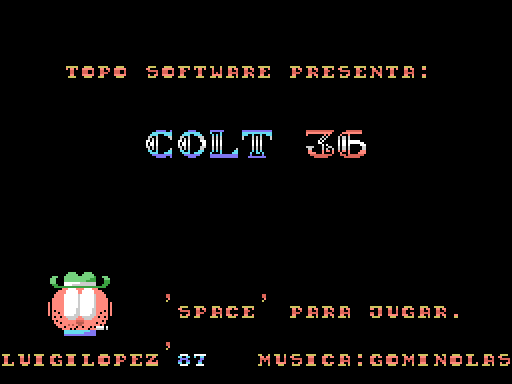
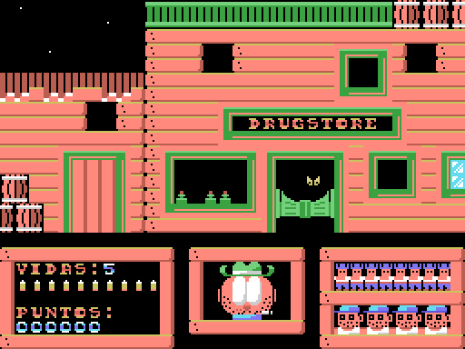

Por dónde empezar
Esto es el desensamblado comentado de Colt 36 (Topo Soft, MSX, 1987), una galería de tiro de cuatro niveles —EL ALMACÉN, EL CAÑÓN, LA MINA y EL SALOON— publicada en cinta de casete. Explica, byte a byte, qué hay grabado en ella.

Conviene saber desde el principio lo que condiciona todo lo demás: Colt 36 no está escrito en ensamblador. El juego es un programa MSX-BASIC de 63 líneas, tokenizado (el intérprete no guarda el texto del programa, sino una forma comprimida donde cada palabra clave ocupa un byte). De código Z80 hay 309 bytes —dos rutinas de copia —una a la memoria de vídeo, la otra de RAM a RAM— y un reproductor de música— más los 45 que ponen el intérprete en marcha.
Qué hay aquí
src/ son los listados publicados; tools/ las herramientas que extraen la cinta, desensamblan, dibujan y verifican; tests/ las pruebas que contrastan la documentación con el binario; docs/ esta documentación y sus imágenes. El Makefile es el punto de entrada. extracted/, work/, dump/ y build/ los genera make y no van versionados.
La cinta no está aquí
La imagen de cinta no se distribuye: hay que poner la propia, con el nombre colt36.tsx y en la raíz del proyecto. El TSX es un formato de imagen de casete: guarda los bloques tal como se leen del audio. La copia con la que se hizo este trabajo son 34 722 bytes y este sha256:
4f3090407ff22826a0ce1281908c497396cda972fe10dd0af694330cd62ebe13Si falta, make se para y lo explica; si el sha256 no cuadra, avisa y sigue, porque los listados podrían no corresponder. Dentro hay 34 239 bytes de contenido en cinco bloques.
Sin ella se puede hacer bastante. Los listados de src/ van en el repositorio y se leen sin más. Y de los 65 tests, 25 pasan en un clon recién bajado: los que contrastan el listado del juego con lo que dice la documentación —que a la línea 730 no salta nadie, o que las direcciones publicadas de las rutinas en código máquina son las que el juego declara con DEFUSR—. Los otros 40 se saltan solos indicando por qué.
Qué hace make
make extrae los bloques, regenera los listados que salen de las herramientas, pasa el control de presupuesto, ejecuta los tests y termina con tres comprobaciones de reproducibilidad. Necesita Python 3 y pasmo, un ensamblador de Z80 de línea de órdenes.
El presupuesto contabiliza cada byte de la cinta contra lo que la documentación dice que es: hoy, 34 239 explicados de 34 239. Va aparte porque detecta un fallo que la reproducibilidad no ve: si el trazador tomase gráficos por código, los bytes seguirían siendo los mismos y el binario saldría idéntico, pero el listado estaría mintiendo.
Las tres comprobaciones de reproducibilidad deciden si todo esto vale algo. Primera: src/colt36.bas, retokenizado, tiene que dar los 3935 bytes del programa original. Segunda: los cuatro listados en ensamblador tienen que dar sus binarios exactos —colt36_arranque.asm 342 bytes, colt36_topo.asm 4254, colt36_scr.asm 7100 y colt36_cm2.asm 18 352—. Tercera: las dos mitades del bloque del juego, concatenadas, sus 4277 bytes.
Mientras eso esté en verde, cualquier afirmación de la documentación se puede contrastar con el binario, y cualquier cambio de comportamiento al tocar el juego se puede atribuir a lo que se ha tocado y no a un error de lectura. Sin esa comprobación, todo esto sería una opinión sobre un montón de bytes.
Sueltos: make extract, make test, make clean y make ram, que arranca openMSX con la cinta de verdad y vuelca su RAM al empezar el juego, para compararla con la imagen de memoria que el proyecto reconstruye.
Retokenizar en vez de reensamblar, y el papel de #
En un desensamblado normal la prueba es reensamblar. Aquí, como el juego es BASIC, la equivalente es volver a tokenizar. Y eso plantea un problema: un programa BASIC no admite explicaciones sin cambiar los bytes, porque un REM ocupa sitio en memoria. Harían falta dos ficheros —uno comentado para leer y otro fiel para comprobar—, y el comentado acabaría desfasado. Se evita reservando el carácter # a principio de línea para los comentarios del proyecto: no es sintaxis de MSX-BASIC, el tokenizador lo ignora, y así el fichero publicado es exactamente el que se comprueba. De las 460 líneas de src/colt36.bas, 357 son comentarios nuestros; 40 están en blanco y las 63 restantes son el programa del juego, tal cual.
Los ficheros de src/
- **
colt36.bas** — el juego: el programa MSX-BASIC completo, línea a línea, con las explicaciones intercaladas. El documento principal del repositorio. - **
colt36_arranque.asm** — lo que va detrás del programa en el mismo bloque: 297 bytes de área de variables y los 45 de código Z80 que copian el juego a 0x8000, parchean su primera línea y ponen el intérprete en marcha. - **
colt36_cm2.asm** — el almacén: dibujos, decorados, música y las rutinas de apoyo que el BASIC llama conUSR. - **
colt36_topo.asm** — el logo animado de la casa, lo primero que se ve al cargar. Byte a byte el mismo bloque que traen otras cintas de Topo Soft. - **
colt36_scr.asm** — la ilustración que se ve mientras carga. - **
*.entries,*.notes,*.nocode** — la entrada de las herramientas: puntos de entrada conocidos, comentarios que se inyectan al generar los listados y los rangos de datos por los que el trazador no debe pasar.
Como salen los bloques de datos
Cada rango de datos declarado en las notas sale como un bloque aparte: su cabecera diciendo para que sirve, su etiqueta y el volcado alineado a su primer byte. Una linea opcional le da al bloque la anchura de fila de su estructura real, y eso es lo que hace legibles los cuatro niveles en el propio listado: 32 bytes por fila es una fila del tablero, asi que los muros, las puertas y los objetos se ven en su sitio. Las formas de las 256 casillas y sus colores salen de ocho en ocho -una casilla por fila-, los escondites de cuatro en cuatro -uno por registro- y la tabla de notas sale en defw.
Las herramientas que querrás usar
**tools/basic_detok.py** hace y deshace la tokenización de MSX-BASIC: detok saca el texto de un binario, tok lo convierte de vuelta, check y verify comprueban el viaje de ida y vuelta. Los punteros internos de un programa BASIC son absolutos, así que hay que darle la dirección de carga; aquí, 0x8000.
**tools/render_niveles.py** reconstruye lo que el juego enseña desde los datos de la cinta, siguiendo las líneas del programa que pintan cada pantalla. No son capturas: es una comprobación. Si el reparto del bloque estuviese mal —si lo que llamamos dibujos fuesen los colores— saldría ruido. Que salgan el título y los cuatro decorados legibles es la prueba más fuerte de que las tablas están donde decimos.
python3 tools/render_niveles.py work/CM2.raw docs/imagenes

**tools/omsx_juega.tcl** carga la cinta en openMSX, deja el juego funcionando y saca capturas. Cargarla lleva su tiempo —bloques a velocidad normal, sin carga rápida—, así que en cuanto el juego arranca guarda un estado, colt36_arranque, al que se vuelve en un segundo con openmsx -savestate colt36_arranque. Se le indican la cinta y la salida en COLT36_TSX y COLT36_OUT.